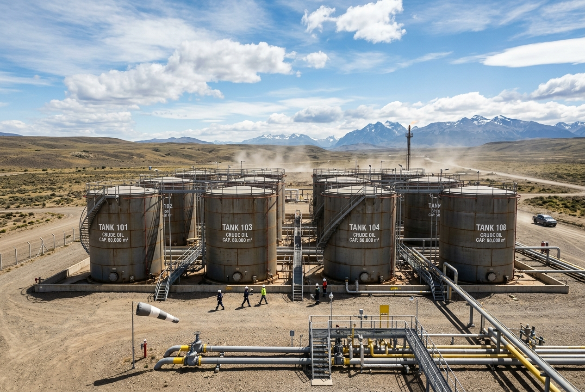

Reacondicionamiento mecánico, recambios de chapa y protección interior de recipientes de almacenamiento.
Los tanques de almacenamiento de hidrocarburos, agua industrial y combustibles sufren desgastes severos debido a la corrosión interna y las tensiones estructurales. En Lanaro y Cía. S.R.L. ejecutamos el mantenimiento integral de estos activos críticos, abarcando desde la desgasificación y limpieza inicial hasta las soldaduras mecánicas de reparación y los revestimientos finales.
Mencionamos nuestra capacidad operativa alineada con las directrices de la norma API-653 para la inspección y reparación estructural de tanques de acero al carbono, sujeto a la validación formal de los inspectores asignados al proyecto.

Corte y reemplazo de chapas corroídas en fondo o primera virola utilizando técnicas de soldadura calificadas.
Remoción por amolado o gubiado de soldaduras fisuradas y resoldado homologado según códigos ASME IX / API.
Fabricación y montaje de bocas de hombre, bridas de conexión, líneas de purga, escaleras y barandas.
Arenado total interior SA 2½ o SA 3 y aplicación de revestimientos especiales (pintura epoxi de altos sólidos o laminación PRFV).
Extracción de barros y sedimentos acumulados, ventilación forzada para eliminar gases inflamables y certificación de atmósfera segura (explosividad 0%).
Medición ultrasónica de espesores de chapa de fondo y virolas para cuantificar la pérdida de metal e identificar las áreas a reparar.
Ejecución de trabajos en caliente (corte, biselado y soldadura) siguiendo procedimientos calificados de soldadura y soldadores homologados.
Control de soldaduras mediante líquidos penetrantes o caja de vacío, seguido de arenado abrasivo y revestimiento final.